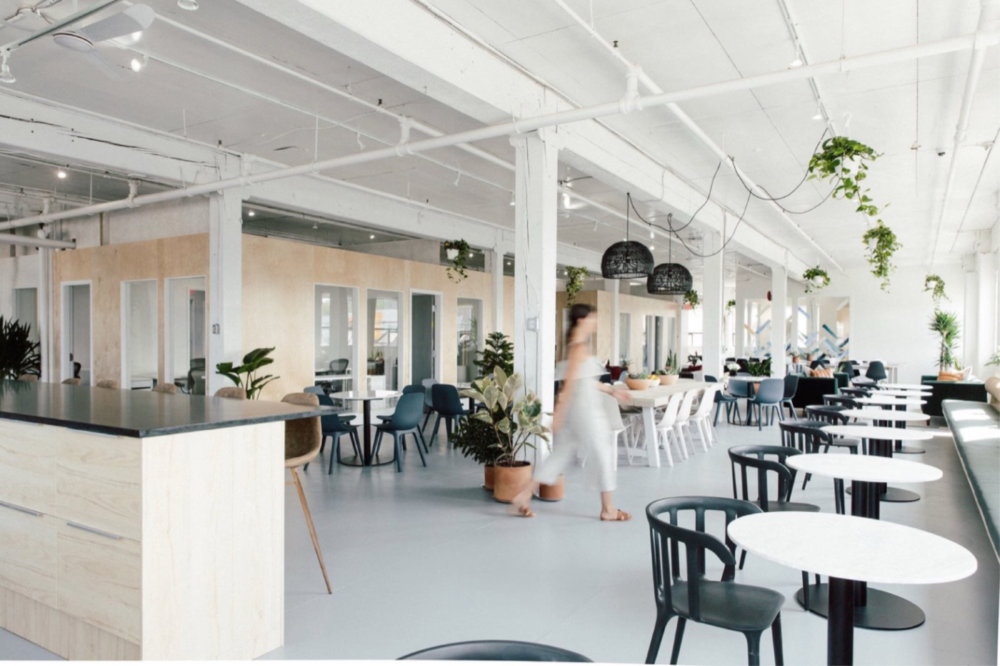
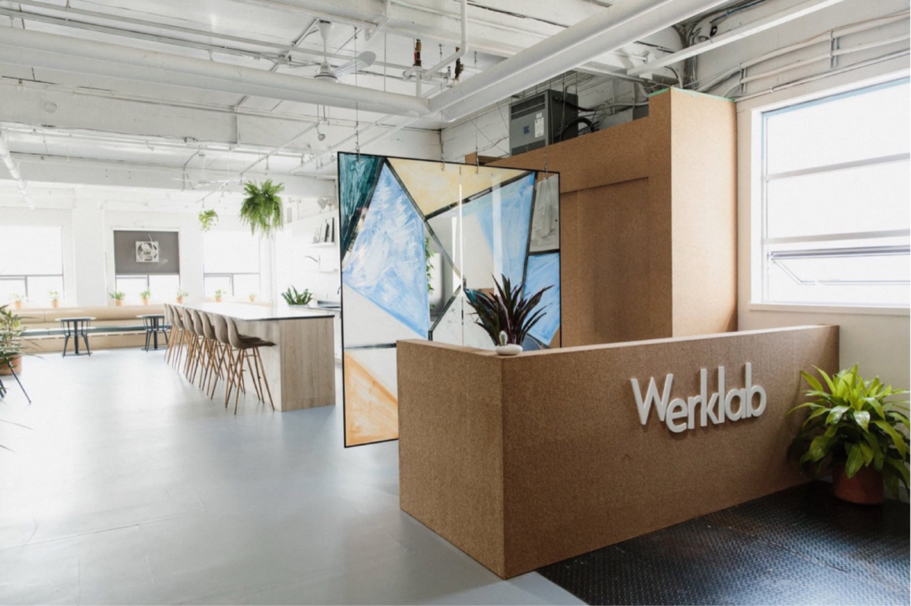

Werklab was a membership-based co-working community of over 200 professionals seeking more than just desk space; they were looking for connection, wellness, and a reimagined relationship with work. As Customer Experience Lead, I was brought in to elevate the member experience, strengthen operational systems, and build the internal culture that would set Werklab apart in the crowded co-working landscape.
Building connections in a wellness-focused co-working space
Werklab


Role
- Community Engagement
- Internal Communications
- Operations Management
Strategy
This was during a pivotal moment when co-working was evolving beyond hot desks and free coffee, members were craving intentional community and workspaces that understood the toll of modern professional life. I came to this role with a distinct advantage: I had been one of Werklab’s first members for four years before joining the team. This insider perspective allowed me to translate Werklab’s wellness-first philosophy into authentic experiences, communications, and operations.
I developed a comprehensive internal communications strategy with weekly email programming that kept members engaged and connected. My messaging balanced operational updates with wellness content, event invitations, and member spotlights, creating a consistent voice that reinforced Werklab’s unique positioning.
I led the entire membership lifecycle from onboarding through retention, designing processes that set the tone for member experience while managing day-to-day operations. I developed creative strategies for events and programming that brought members together beyond their desks, and built strategic brand partnerships that provided member value through exclusive programming while creating revenue streams for community initiatives.
Result
During my tenure, Werklab strengthened its position in the co-working market through a sustained focus on member experience and community building.
The internal communications strategy created consistent touchpoints that kept members engaged with the space and each other. Weekly email programming maintained strong open rates and drove event participation, contributing to improved retention rates.
Operational improvements streamlined the member journey and reduced friction points throughout the experience. The onboarding process set clear expectations while building genuine connection to the community from day one.
Brand partnerships brought tangible value to members through wellness workshops, exclusive events, and product collaborations that aligned with Werklab’s holistic approach. These partnerships also diversified revenue and strengthened the brand’s credibility in the wellness and future-of-work space.
The team became the embodiment of Werklab’s values, delivering hospitality that felt personal rather than transactional, and creating an atmosphere where members felt genuinely seen and supported.